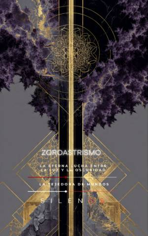

Illuminati
ZOROASTRISMO Y DUALISMO : La eterna lucha entre la luz y la oscuridad
Sinopsis
¿Es el dualismo solo una creencia religiosa o una sofisticada tecnología de control mental y social? En este fascinante recorrido histórico y filosófico, Zoroastrismo y Dualismo desentraña la "matriz dualista": un mecanismo operativo que ha moldeado civilizaciones, legitimado imperios y configurado las estructuras de las sociedades secretas más influyentes de la historia. Desde las visiones de Zarathustra en el río Daiti hasta las complejas redes de los Illuminati y la Masonería, este libro analiza cómo la división del mundo en dos polos irreconciliables —luz contra oscuridad, orden contra caos— se convirtió en la herramienta definitiva para gobernar conciencias y dirigir el curso de la historia. Lo que descubrirás en esta obra: Fundamentos y Cosmogonía: Un análisis profundo de la polarización como herramienta y el origen de los principios absolutos que rigen nuestra percepción del bien y el mal. Poder e Imperio: El papel de figuras como Ciro el Grande y la casta de los Magos en la creación de una teocracia práctica que influyó en Babilonia y el mundo antiguo. Tecnología Sagrada y Ritualística: El uso del sonido, la botánica sagrada (Haoma) y los ritos de purificación como métodos de ingeniería espiritual. Transmisión y Sincretismo: Cómo el saber persa sobrevivió a través del crisol alejandrino, el paganismo de Harrán y llegó hasta la cultura andalusí. La Persistencia del Dualismo en Europa: El impacto de movimientos como los bogomilos y los cátaros, y su lucha contra las estructuras de poder establecidas. Sociedades Secretas y Modernidad: Una investigación detallada sobre los Illuminati de Baviera, el misticismo masónico, la O.T.O. y la apropiación simbólica en movimientos modernos y la cultura pop. ¿Por qué leer este libro? Zoroastrismo y Dualismo no es solo un tratado sobre religión comparada; es un manual para entender los hilos invisibles que mueven la política global y la moral contemporánea. A través de 51 capítulos meticulosamente documentados, los autores ofrecen una visión crítica sobre cómo las élites han utilizado la retórica de la "Luz" para justificar medidas excepcionales, centralizar el saber y gestionar la voluntad de las masas. Ideal para: Investigadores de la historia oculta, estudiantes de filosofía, entusiastas de las sociedades secretas y cualquier lector interesado en comprender las raíces profundas del pensamiento político y espiritual de Occidente.